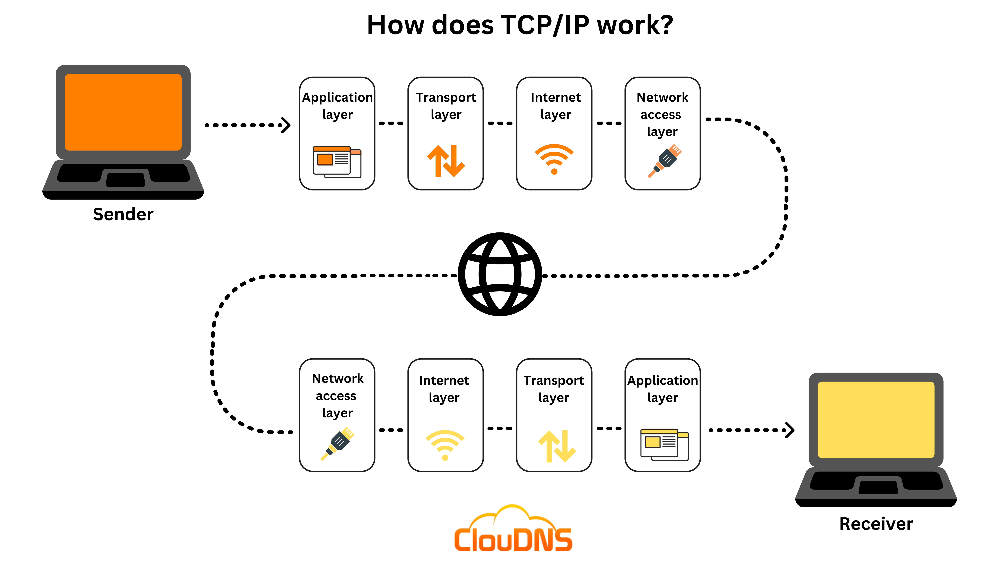

Sadly, I can only make use of minimal HTML elements, but I will utilise them to their full potential!
In 1965, the first method of communicating between computers was found!
It was called "packet switching" , a method of data transmission where information is broken into small units called packets. Each packet travels independently across a network and may take different routes to reach the destination. Once all packets arrive, they are reassembled into the original message.
TCP (Transmission Control Protocol) ensures reliable and ordered data transfer between devices. It starts with a handshake, breaks data into numbered packets, and ensures all arrive correctly by retransmitting lost ones. Once received, packets are reassembled in the right order, making TCP ideal for web browsing, emails, and file transfers where accuracy is key.
Then, it went super fast! In 1988 the Internet relay-chat system was launched. It was a text-based communication
system that allowed users to chat in real-time through public or private channels on a decentralized network of
servers.
Then came HTTP, then the WWW, then in 1992, a very primitive version of this program came to live: The first version of HTML!
On January 1th, 1983, the transition to TCP/IP made it possible for different networks to interconnect, marking the official birth of the modern internet. Just like H2O molecules form water, computers are connected by this shared protocol, enabling communication across the global network.
But enough about the history, how does the internet work nowadays? Beware! a lot of things have changed since then! As the famous Tim Berners-Lee once said:
"The Web does not just connect machines, it connects people."
W3C ensures web standards are followed globally. The W3C (World Wide Web Consortium) is responsible for developing and maintaining web standards that ensure the internet is interoperable, accessible, and functional across different platforms and devices.
The internet was once a slow fast and chaotic place, but with better protocols and
technologies, it’s now the wild west digital highway connecting billions of devices.
The internet is a global network of computers connected to each other, allowing them to share information. When you want to visit a website, your computer sends a request to a server using a set of protocols called TCP/IP. This request travels through various routers and networks, ensuring the data reaches its destination.
The server then processes the request and sends the website data (such as text, images, and videos) back to your computer. Your browser then interprets this data and displays the website on your screen. This entire process happens in just a few seconds!
Modern internet connections use high-speed networks, fiber optics, and wireless technologies to make sure the data can travel quickly and reliably. Without this complex infrastructure, we wouldn't be able to access websites, send emails, or stream videos.
--> | Component | Description |
|---|---|
| Servers | Stores websites and responds to requests from users' devices. |
| Routers | Direct data between networks, ensuring it reaches the right destination. |
| ISPs (Internet Service Providers) | Provide users with access to the internet via wired or wireless connections. |
| Browsers | Allow users to access websites and view content over the internet. |
| These components work together to enable seamless internet access. | |